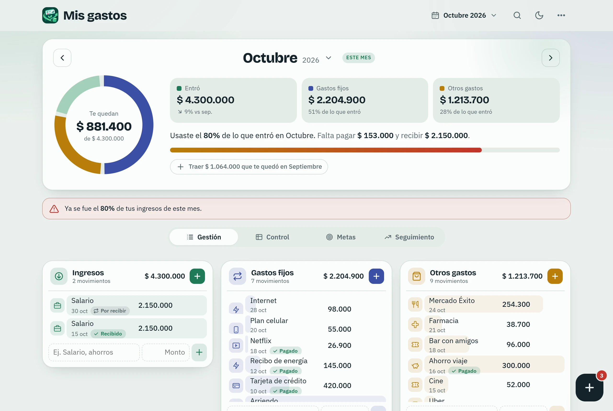
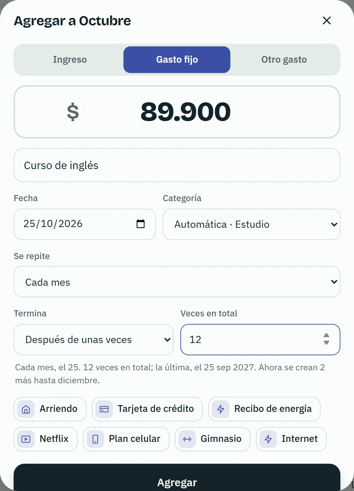
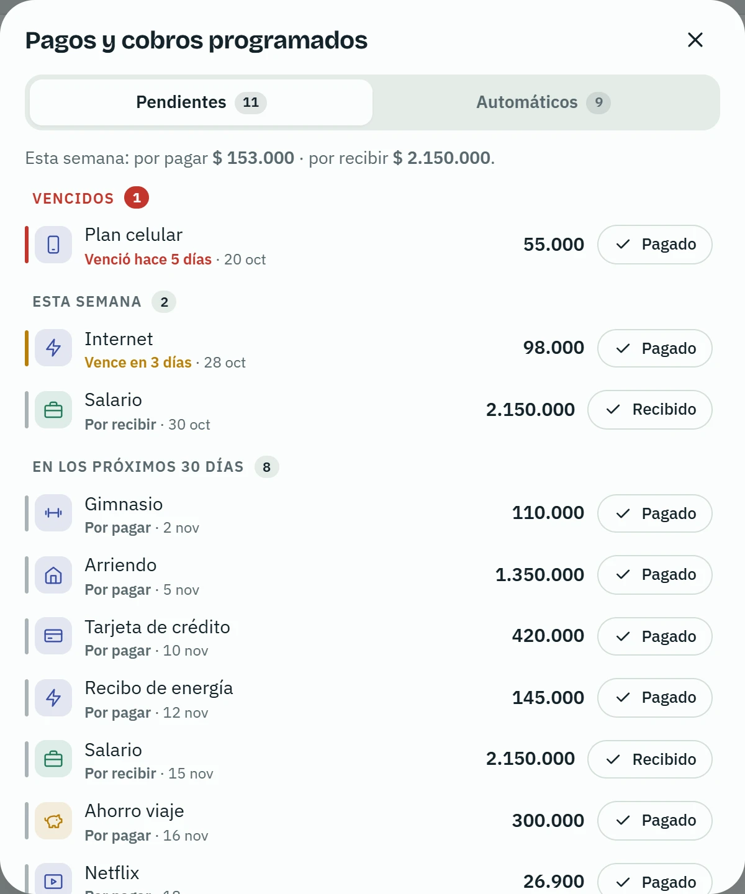
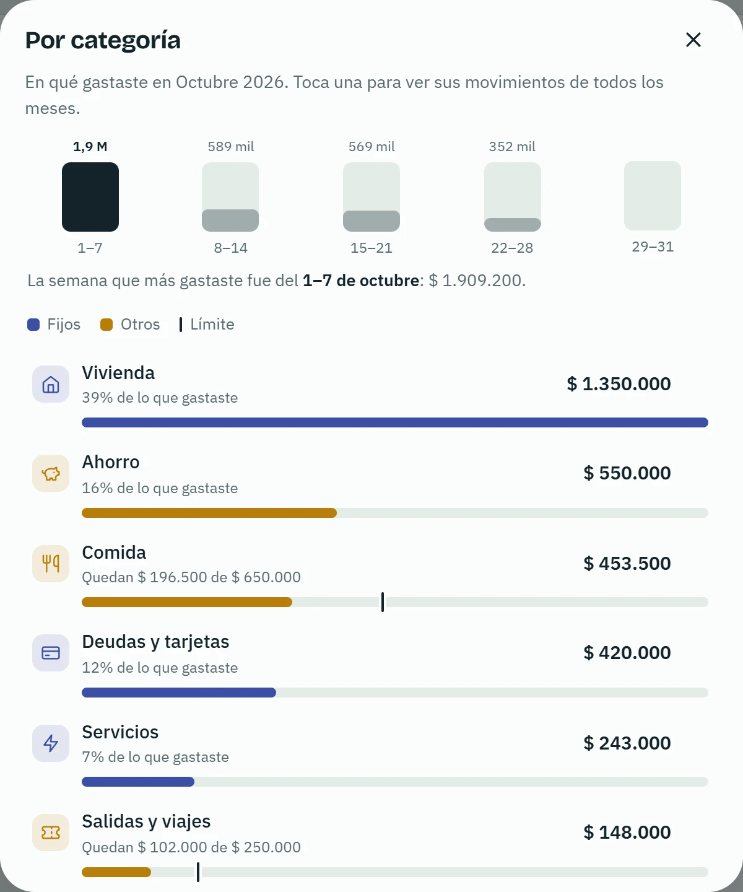
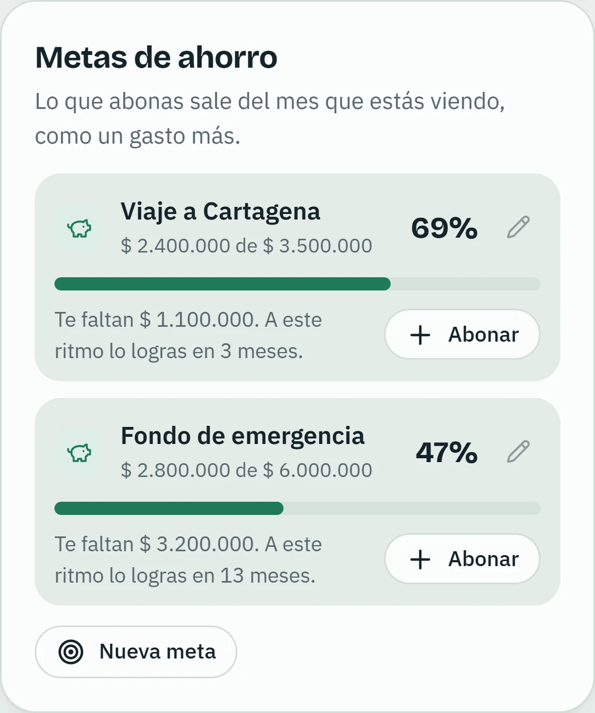
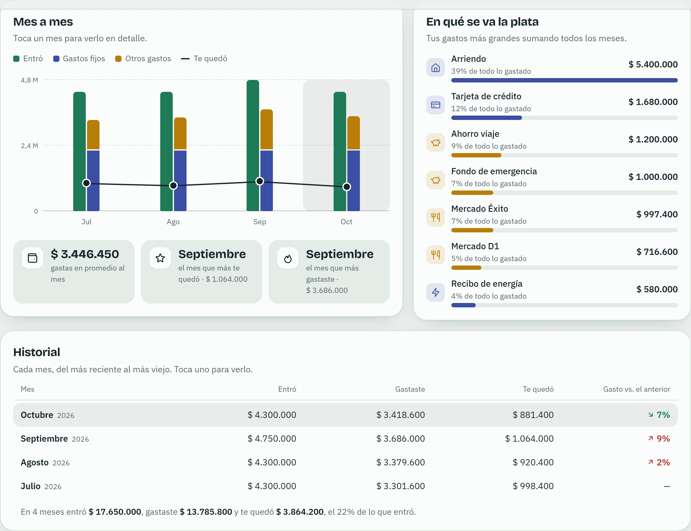
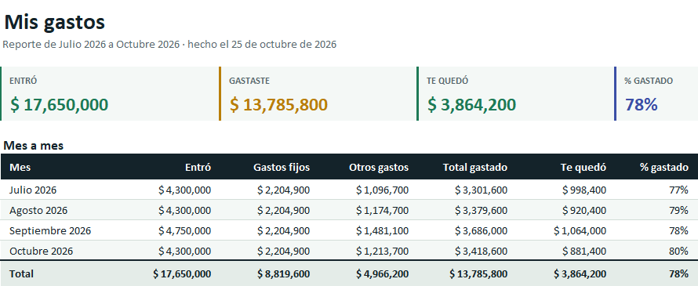
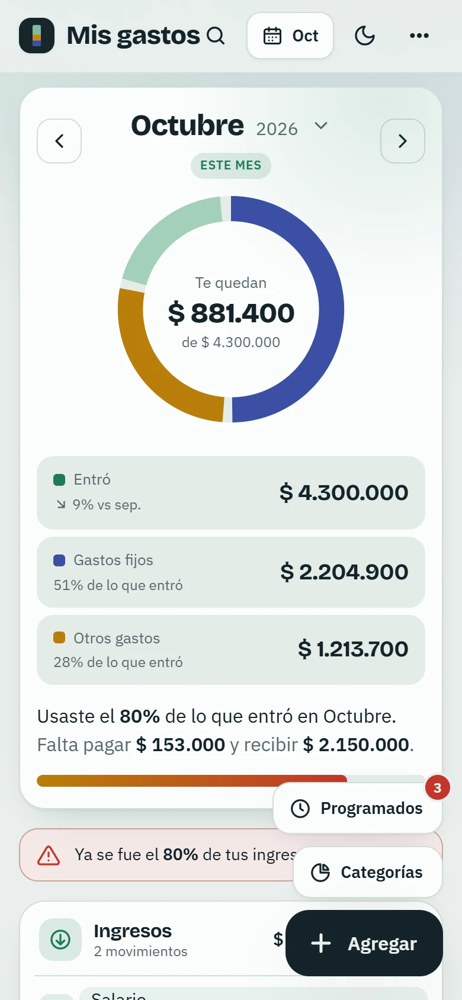
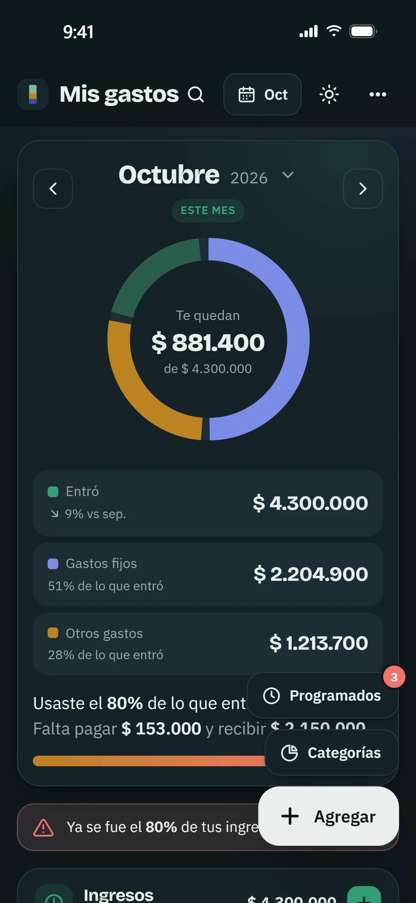
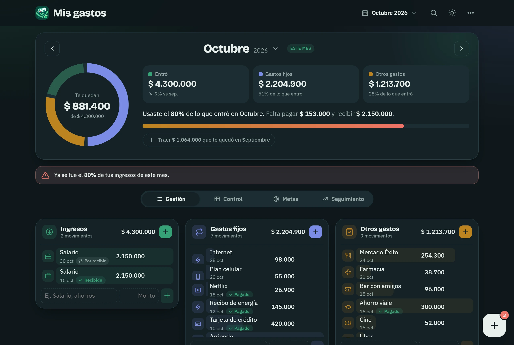

Tu plata, mes a mes, sin enredos.
Anota lo que entra y lo que sale. Mis gastos te dice cuánto te queda, en qué se te va la plata y qué pagos vienen. Sin cuentas ni hojas de cálculo: todo se queda en tu computador.

Sin cuentas
No te registras en nada. Lo que anotas se guarda en tu computador y no se envía a ningún lado.
Respaldo cada día
La app guarda sola una copia en tus Documentos. Si cambias de computador, te ofrece cargarla.
Se actualiza sola
Cuando sale una versión nueva, la instala en un momento, sin que pierdas nada de lo que anotaste.
Todo lo que necesitas para llevar tus cuentas
Pensada para usarla un par de minutos al día, no para aprender a usarla.
Anotar un gasto toma segundos
Escribe el monto y en qué fue. La app se encarga del resto.
- La categoría sale sola del concepto: "Almuerzo" queda en Comida, "Arriendo" en Vivienda.
- Los conceptos que más usas aparecen abajo, con su último monto, para agregarlos con un toque.
- Un mes nuevo te ofrece traer los gastos fijos e ingresos del anterior.

Lo que se repite, se anota solo
El arriendo, el salario de cada quincena, Netflix, la cuota de la tarjeta: los anotas una vez y la app crea los del resto del año.
- Cada semana, quincena, mes, 2, 3 o 6 meses, o cada año; hasta una fecha, un número de veces o sin fin.
- El botón Programados te dice cuántos vencen esta semana, y se pone en rojo si alguno ya se venció.
- Marcas cada uno como pagado o recibido con un toque.

Mira en qué se te va la plata
Cuánto se fue en comida, transporte, salidas o servicios este mes, y cuál fue la semana en que más gastaste.
- Ponle un límite al mes a cada categoría y mira cuánto te queda.
- Si te pasas, la app te avisa.
- Toca una categoría para ver todos sus movimientos, de todos los meses.

Ahorra con la meta a la vista
Un viaje, un fondo de emergencia, lo que sea. Cada abono cuenta como un gasto del mes, y la meta te dice cuánto llevas y, al ritmo que vas, en cuántos meses la logras.

Compara un mes con otro
Una gráfica con lo que entró, lo que gastaste y lo que te quedó cada mes, cuánto gastas en promedio y tus gastos más grandes sumando todos los meses.

Un Excel listo para revisar o imprimir
Con un clic sale un archivo de Excel con todo ordenado, no una tabla plana.
- Un resumen con los totales y una tabla mes a mes.
- Todos los movimientos con filtros, el gasto por categoría y tus metas.
- Los totales son fórmulas: si cambias un número, se recalculan.

De día o de noche
La app sigue el tema claro u oscuro de Windows, o lo eliges tú. Y se acomoda si la pones en una ventana angosta al lado de otra cosa.



Tus datos son tuyos
No hay cuentas, servidores ni publicidad. La app solo usa internet para revisar si hay una versión nueva.
Se quedan en tu computador
Lo que anotas no sale de tu computador. Nadie más lo ve.
Copia de cada día
Cada día que la usas se guarda una copia en Documentos\Mis gastos\Respaldos; se guardan las de los últimos 30 días.
Llévalos a otro computador
Guarda un respaldo en un archivo y ábrelo en el otro computador, desde el menú de la app.
Instalarla toma un minuto
Funciona en Windows 10 y Windows 11.
Descárgala
Toca Descargar para Windows. Se baja un archivo de unos 3 MB.
Ábrela
Abre el archivo. Si Windows muestra "Windows protegió tu PC", toca Más información y luego Ejecutar de todas formas: ese aviso sale con los programas que todavía no descarga mucha gente.
Empieza a anotar
Al terminar, la encuentras en el menú Inicio como Mis gastos. Abre vacía, lista para lo tuyo.
Preguntas frecuentes
¿Pierdo mis datos al actualizar?
No. Las actualizaciones cambian la app, no lo que anotaste. Además, la app solo instala versiones firmadas por su autor.
¿Necesito internet?
Para usarla, no. Solo para descargarla y para que se actualice; sin internet sigue funcionando y se actualiza la próxima vez que haya conexión.
¿Cómo la desinstalo?
Desde Configuración → Aplicaciones, como cualquier programa. Los respaldos de Documentos\Mis gastos\Respaldos no se borran: si la vuelves a instalar, te ofrece cargarlos.
Se dañó el computador, ¿cómo recupero todo?
Si guardaste la carpeta Documentos\Mis gastos\Respaldos (o un respaldo tuyo) en otro lado, instala la app en el computador nuevo, copia la carpeta en el mismo lugar y abre la app: te ofrecerá cargar el respaldo. También puedes abrirlo desde el menú ⋯ → Respaldos → Abrir respaldo.
¿Hay versión para Mac o para el celular?
Por ahora solo para Windows.
Empieza este mes
Descárgala, anota lo de hoy y mira cuánto te queda.